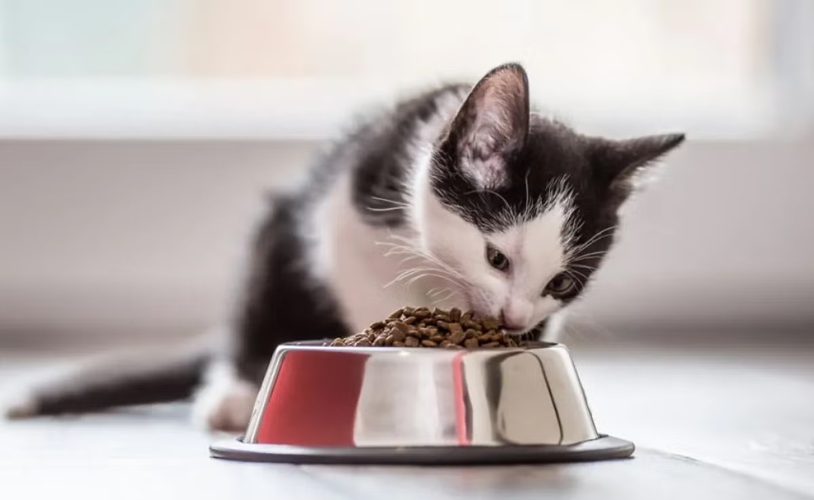

Você Sabia? 💭
Clique no botão e descubra uma curiosidade sobre alimentação dos pets! 👇

1 Escolha um alimento completo e balanceado
Prefira alimentos adequados à espécie, à idade e às necessidades do animal. Uma alimentação completa
ajuda a
fornecer os
nutrientes necessários para a saúde.
2 Mantenha água fresca disponível
A hidratação é essencial para o funcionamento do organismo. Troque a água regularmente e mantenha o
recipiente
limpo.
3 Ofereça porções adequadas
A quantidade de alimento varia conforme o peso, a idade, a atividade física e as condições de saúde
do pet. Siga as
orientações da embalagem e do médico-veterinário.
4Tenha cuidado com frutas e petiscos
Algumas frutas podem ser oferecidas em pequenas quantidades, mas nem todas são seguras. Uvas e
passas, por exemplo,
podem causar intoxicação em cães.
5Respeite as necessidades de cada espécie
Cães e gatos possuem necessidades nutricionais diferentes. Gatos, por exemplo, precisam de
nutrientes específicos,
como
a taurina, em sua alimentação.
6 Evite alimentos tóxicos
Chocolate, uvas, passas e alimentos com xilitol estão entre os perigos para cães. Cebola e alho
também podem ser
tóxicos
para cães e gatos.
7 Previna o sobrepeso.
O excesso de calorias pode contribuir para a obesidade e outros problemas de saúde. Controle os
petiscos e incentive
atividades adequadas à idade e à condição física do animal.
8Consulte um médico-veterinário.
Antes de mudar a alimentação ou oferecer dietas caseiras, procure orientação profissional para
garantir que o animal
receba todos os nutrientes de que precisa.
9Escolha rações de qualidade: Prefira rações do tipo Premium ou Super
Premium, que possuem maior digestibilidade e melhor
aproveitamento de nutrientes em comparação às do tipo Standard.
10Deixar o saco de ração aberto ou despejar o conteúdo em potes plásticos
oxida a gordura do alimento. Esse processo
destrói os nutrientes e gera radicais livres que causam inflamações e problemas hepáticos nos pets.
Para proteger o
alimento, mantenha a ração bem fechada dentro da própria embalagem original, que possui barreiras
contra luz e umidade,
e coloque o saco inteiro no container.